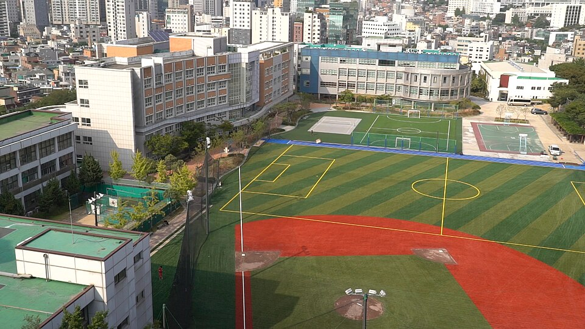
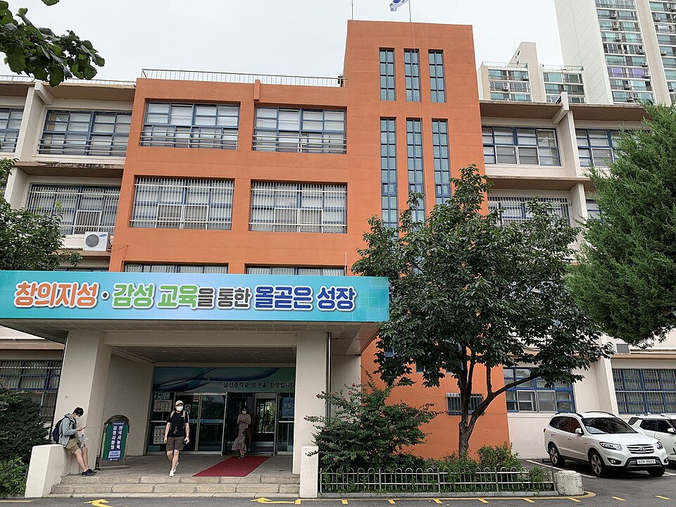

성북구는 오래된 명문 고등학교가 몰려 있는 지역입니다. 돈암·동소문 쪽 경동고·한성여고·계성고, 안암동의 고대부고, 성북동 쪽 서울사대부고까지 한 구 안에 30곳이 있습니다. 학교마다 시험 난이도와 출제 스타일이 확연히 달라서, 성북구에서 수학과외·영어과외를 찾을 때는 그 학교 기출을 아는지가 중요합니다.
오늘은 성북구에 직접 찾아가는 선생님 중 두 분을 소개합니다. 한 분은 KAIST를 나온 고등 수학 선생님, 한 분은 학군지 학원에서 고등부를 맡았던 영어 선생님입니다.
과학고를 조기졸업하고 KAIST를 나온 선생님입니다. 고등 수학과외를 암기가 아니라 이해 중심으로 가르치는 게 특징이고, 예비 고1부터 고3까지 봅니다. 고대부고·서울사대부고처럼 수학 난이도가 높은 학교의 상위권 학생에게 맞습니다.
관리 방식이 촘촘합니다. 2주마다 모의테스트로 성취도를 점검하고 결과에 따라 보완 계획을 다시 세우며, 매 수업 후 학습 내용·숙제·이해도를 요약한 리포트를 보냅니다. 숙제 제출과 질의응답용 학생 카톡방도 운영합니다. 코딩까지 가능해서 이공계 진학을 생각하는 학생에게 진로 상담도 함께 됩니다.
이ㅇ영 선생님 상세 프로필 →중계동 학군지 입시학원에서 고등부 영어전임으로 5년 넘게 가르친 선생님입니다. 학원에서 하던 방식대로 학교별 기출과 출제 경향을 분석해 자체 자료를 만들어 옵니다. 성북구 영어과외에서 학교마다 다른 시험 스타일에 맞추려면 이 부분이 큽니다.
범위가 넓습니다. 어법 개념부터 차근차근 세우는 기초 보완, 내신과 모의고사를 병행하는 중위권 관리, 심화 어법 교재와 고난도 독해까지 다루는 최상위권 심화가 모두 됩니다. 복잡한 어법도 학생 눈높이로 풀어 설명하는 쪽이라 영어에서 한번 무너진 학생도 다시 잡습니다.
신ㅇ섭 선생님 상세 프로필 →
학교마다 시험 출제 경향과 수행평가 비중이 달라서, 학교별로 준비법을 따로 정리해 두었습니다.
👉 성북구 수학과외 선생님 · 성북구 영어과외 선생님 · 관리 학교 30곳 전체 보기
학년과 과목, 원하는 시간대만 알려주시면 24시간 안에 맞는 선생님을 추천해 드립니다.